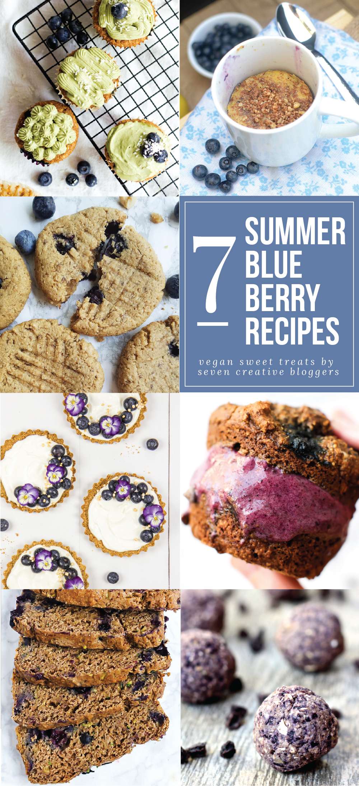
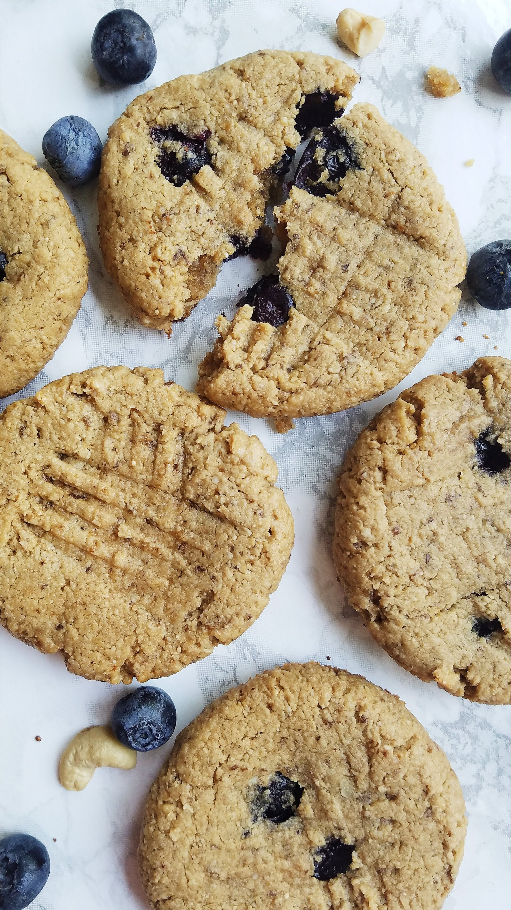
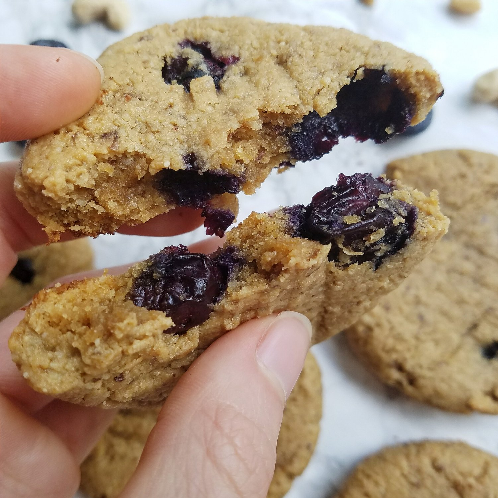
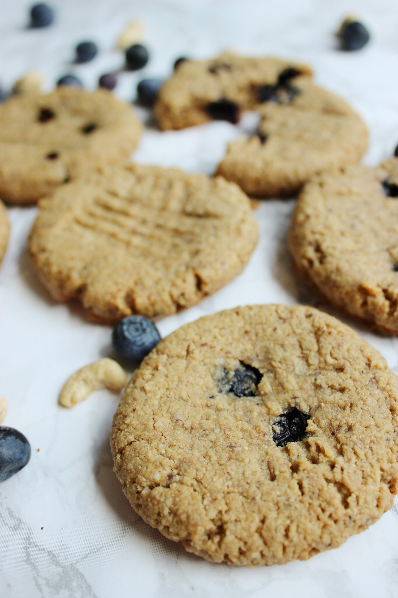
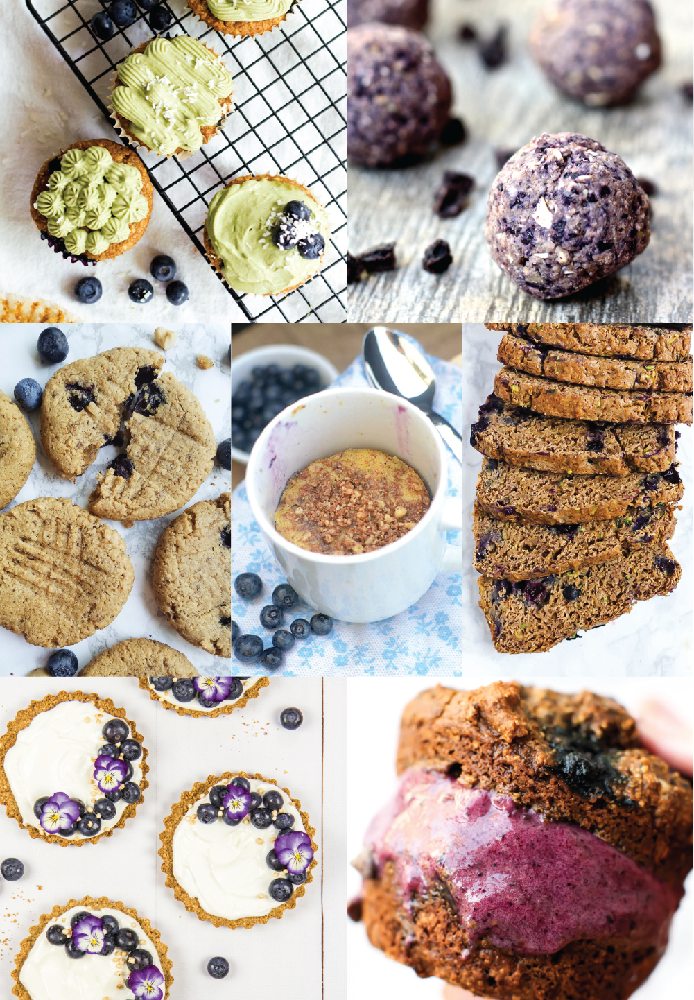

Vegan Blueberry Cashew Breakfast Cookies - 7 SWEET SUMMER BLUEBERRY RECIPES




Sweet, soft baked blueberry cashew breakfast cookies that will definitely make you eager for the day to begin! These mouth-watering cookies are vegan, gluten free, and refined sugar free. They don't need to be eaten at breakfast; they make a perfect dessert or sweet snack, too!
This recipe is part of a collection of 7 summer blueberry recipes by some really great bloggers, so if you're looking for some vegan blueberry treats, check out the other 6 recipes at the end of this post!
It's blueberry season! I've been really taking advantage of the fresh blueberries lately. The sweet, refreshing flavor is so prominent in these summer months, and I'm totally hooked! I've made blueberry muffins, smoothies, oatmeal, and now, cookies! I discovered the amazing combination of fresh blueberries with smooth cashews, and I knew I had to make cookies with the two together.
I'm so glad I did! These cookies make my mouth water. The flavor is lightly sweet, not too overpowering for a breakfast meal, but still makes your sweet craving happy. Perfectly paired with a cup of tea or coffee. I feel like these blueberry cashew breakfast cookies are something that would be served at a Starbucks; a girl could dream, at least? :p The cookies are crisp on the outside with a soft-baked center. Exactly how I prefer them.
As a sweetener, I used coconut sugar for these cookies, but feel free to use stevia instead if you want them to be sugar free! Both variations are absolutely delicious. As long as you've got the blueberries and the cashew butter, you're good to go! They're the co-stars here.
Ever think about how there's a good argument for cookies being the superior baked good, over things like cakes and cupcakes? I mean seriously, you can't beat a dessert that's baked in 10 minutes or less. I always forget that cookies are done so fast, and it makes me happy every single time I remember, haha. I have terrible memory, I swear. It's pretty embarrassing. If you know me in real life, you've seen how bad it is compared to everyone else. You could tell me I did something or said something I never actually did, and I'd believe you. Anywhoooo.. What was I saying?
Ah, yes! Cookies! Get yourself some fresh blueberries and try this recipe out! Still completely amazes me that these gluten free, vegan, and refined sugar free Blueberry Cashew Breakfast Cookies are so perfect in every aspect.
Don't forget; if you're looking for some fantastic blueberry recipes, check out the other 6 vegan recipes at the end of this post. All of the recipes by these lovely bloggers will leave you drooling in awe.
Blueberry Cashew Breakfast Cookies
Makes: 7 cookies
-
2/3 cups oat flour (ground up raw oats, use gluten free oats if needed)
-
1/3 cup almond meal/flour
-
1/2 cup all natural cashew butter (I use Crazy Richard's)
-
1 flax egg (1 TBSP ground flax seed mixed with 3 TBSP water)
-
1 tsp vanilla extract
-
1/4 cup coconut sugar (or stevia)
-
1/2 tsp baking powder
-
1/3 cup fresh blueberries
-
Preheat the oven to 350 F.
-
If your oats are not ground into a flour yet, use a small blender to grind it down. In a medium bowl, mix the oat flour with the remaining ingredients except for the blueberries.
-
Once everything is evenly mixed, fold in the blueberries. Roll the dough into 7 cookie balls, lightly pressing each down on a baking sheet sprayed with nonstick spray.
-
Bake at 350 F for 10 minutes, or until lightly browned. Let cool 5-10 minutes, then enjoy!
Nutritional Information for 1 cookie: 200 calories; 13 g fat, 14 g carbs (2 g fiber), and 6 g protein
6 More Sweet Summer Blueberry Recipes
-
Matcha Frosted Blueberry Coconut Cupcakes from Love Me, Feed Me
-
Blueberry Cobbler Cookie Dough Bites from Healthy Helper
-
Lemon Blueberry Crumb Cake Mugcake from Athletic Avocado
-
Blueberry Zucchini Bread from Emilie Eats
-
Blueberry Granola Tarts from Choosing Chia
-
Chocolate Blueberry Muffin Ice Cream Sandwiches from Feasting on Fruit
